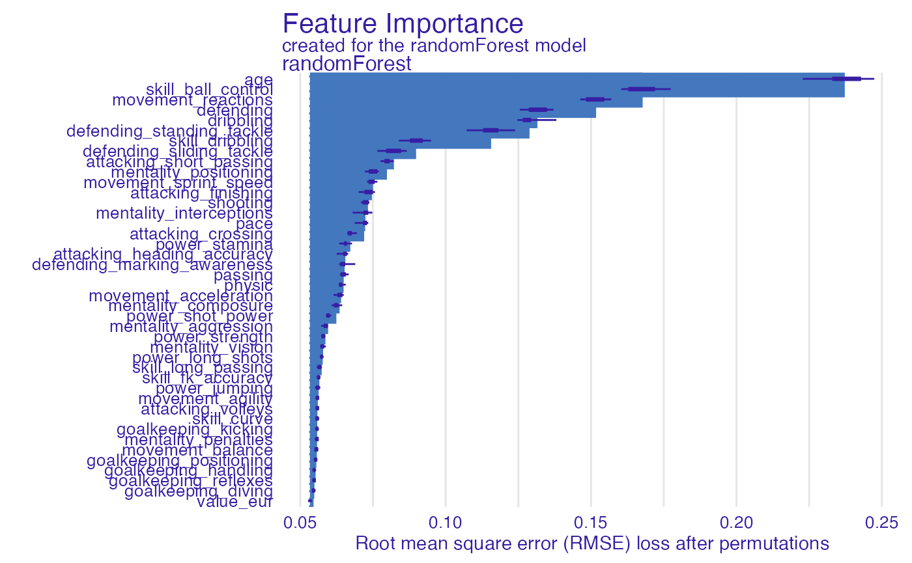
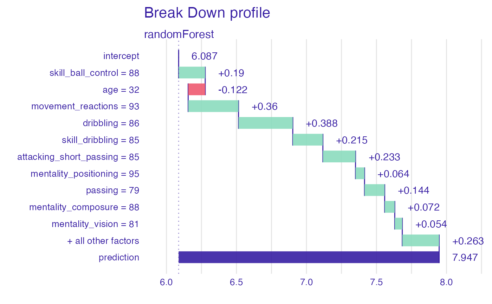
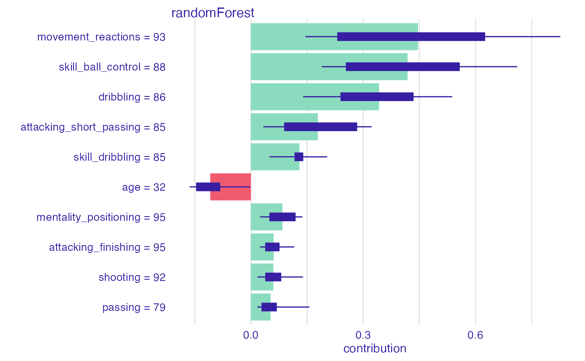
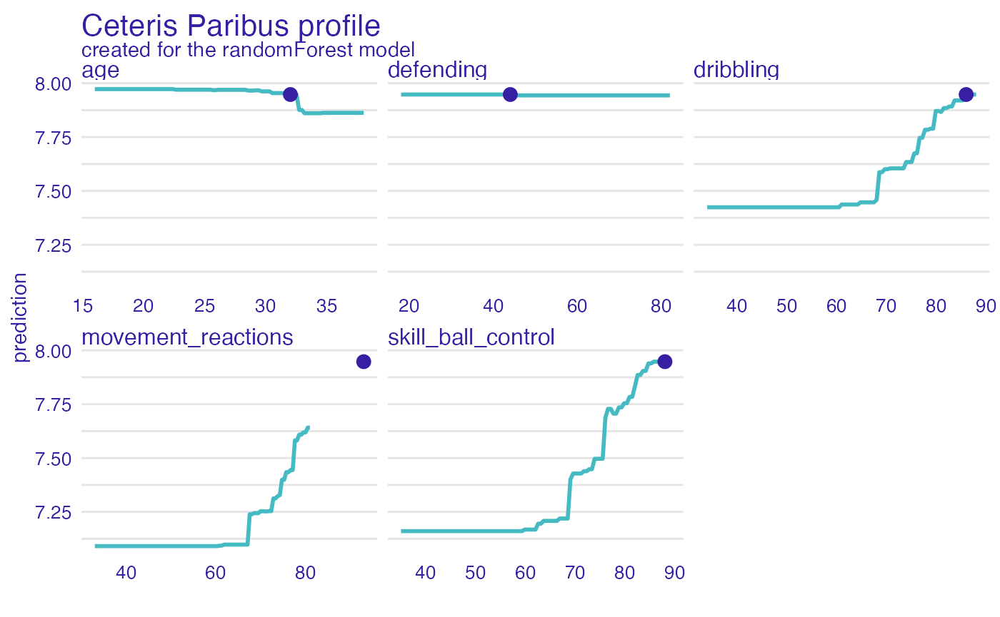

vignettes/vignette_fifa22.Rmd
vignette_fifa22.RmdLet’s see an example for regression/pricing model. Here we are using
a dataset fifa22 available in the arborist
package.
library("arborist")
fifa <- fifa22[!duplicated(fifa22$short_name),]
rownames(fifa) <- fifa$short_name
fifa <- na.omit(fifa[,c(5,7,18:57)])
fifa$value_eur <- log10(fifa$value_eur)
attr(fifa, "na.action") <- NULL
head(fifa)#> value_eur age pace shooting passing dribbling defending
#> L. Messi 7.892095 34 85 92 91 95 34
#> R. Lewandowski 8.077368 32 78 92 79 86 44
#> Cristiano Ronaldo 7.653213 36 87 94 80 88 34
#> Neymar Jr 8.110590 29 91 83 86 94 37
#> K. De Bruyne 8.098644 30 76 86 93 88 64
#> K. Mbappé 8.287802 22 97 88 80 92 36
#> physic attacking_crossing attacking_finishing
#> L. Messi 65 85 95
#> R. Lewandowski 82 71 95
#> Cristiano Ronaldo 75 87 95
#> Neymar Jr 63 85 83
#> K. De Bruyne 78 94 82
#> K. Mbappé 77 78 93
#> attacking_heading_accuracy attacking_short_passing
#> L. Messi 70 91
#> R. Lewandowski 90 85
#> Cristiano Ronaldo 90 80
#> Neymar Jr 63 86
#> K. De Bruyne 55 94
#> K. Mbappé 72 85
#> attacking_volleys skill_dribbling skill_curve
#> L. Messi 88 96 93
#> R. Lewandowski 89 85 79
#> Cristiano Ronaldo 86 88 81
#> Neymar Jr 86 95 88
#> K. De Bruyne 82 88 85
#> K. Mbappé 83 93 80
#> skill_fk_accuracy skill_long_passing skill_ball_control
#> L. Messi 94 91 96
#> R. Lewandowski 85 70 88
#> Cristiano Ronaldo 84 77 88
#> Neymar Jr 87 81 95
#> K. De Bruyne 83 93 91
#> K. Mbappé 69 71 91
#> movement_acceleration movement_sprint_speed movement_agility
#> L. Messi 91 80 91
#> R. Lewandowski 77 79 77
#> Cristiano Ronaldo 85 88 86
#> Neymar Jr 93 89 96
#> K. De Bruyne 76 76 79
#> K. Mbappé 97 97 92
#> movement_reactions movement_balance power_shot_power
#> L. Messi 94 95 86
#> R. Lewandowski 93 82 90
#> Cristiano Ronaldo 94 74 94
#> Neymar Jr 89 84 80
#> K. De Bruyne 91 78 91
#> K. Mbappé 93 83 86
#> power_jumping power_stamina power_strength power_long_shots
#> L. Messi 68 72 69 94
#> R. Lewandowski 85 76 86 87
#> Cristiano Ronaldo 95 77 77 93
#> Neymar Jr 64 81 53 81
#> K. De Bruyne 63 89 74 91
#> K. Mbappé 78 88 77 82
#> mentality_aggression mentality_interceptions
#> L. Messi 44 40
#> R. Lewandowski 81 49
#> Cristiano Ronaldo 63 29
#> Neymar Jr 63 37
#> K. De Bruyne 76 66
#> K. Mbappé 62 38
#> mentality_positioning mentality_vision mentality_penalties
#> L. Messi 93 95 75
#> R. Lewandowski 95 81 90
#> Cristiano Ronaldo 95 76 88
#> Neymar Jr 86 90 93
#> K. De Bruyne 88 94 83
#> K. Mbappé 92 82 79
#> mentality_composure defending_marking_awareness
#> L. Messi 96 20
#> R. Lewandowski 88 35
#> Cristiano Ronaldo 95 24
#> Neymar Jr 93 35
#> K. De Bruyne 89 68
#> K. Mbappé 88 26
#> defending_standing_tackle defending_sliding_tackle
#> L. Messi 35 24
#> R. Lewandowski 42 19
#> Cristiano Ronaldo 32 24
#> Neymar Jr 32 29
#> K. De Bruyne 65 53
#> K. Mbappé 34 32
#> goalkeeping_diving goalkeeping_handling goalkeeping_kicking
#> L. Messi 6 11 15
#> R. Lewandowski 15 6 12
#> Cristiano Ronaldo 7 11 15
#> Neymar Jr 9 9 15
#> K. De Bruyne 15 13 5
#> K. Mbappé 13 5 7
#> goalkeeping_positioning goalkeeping_reflexes
#> L. Messi 14 8
#> R. Lewandowski 8 10
#> Cristiano Ronaldo 14 11
#> Neymar Jr 15 11
#> K. De Bruyne 10 13
#> K. Mbappé 11 6Let’s use the arborist to train the model.
# prepare model
# model_fifa <- train(fifa, "value_eur")
library(randomForest)
model_rf <- randomForest(value_eur ~ ., data = fifa, ntree = 50)
library(DALEX)
set.seed(1313)
fifa100 <- fifa[sample(1:nrow(fifa), 250),]
model_ex <- explain(model_rf, fifa100, fifa100$value_eur)#> Preparation of a new explainer is initiated
#> -> model label : randomForest ( default )
#> -> data : 250 rows 42 cols
#> -> target variable : 250 values
#> -> predict function : yhat.randomForest will be used ( default )
#> -> predicted values : No value for predict function target column. ( default )
#> -> model_info : package randomForest , ver. 4.7.1.1 , task regression ( default )
#> -> predicted values : numerical, min = 4.95877 , mean = 6.087028 , max = 7.630981
#> -> residual function : difference between y and yhat ( default )
#> -> residuals : numerical, min = -0.1643472 , mean = -0.001436354 , max = 0.1643335
#> A new explainer has been created!
model_performance(model_ex)#> Measures for: regression
#> mse : 0.002847472
#> rmse : 0.05336171
#> r2 : 0.9896062
#> mad : 0.03315975
#>
#> Residuals:
#> 0% 10% 20% 30% 40% 50%
#> -0.16434717 -0.07267034 -0.04475179 -0.02574028 -0.01309642 0.00336500
#> 60% 70% 80% 90% 100%
#> 0.01416910 0.02533777 0.03793890 0.06189432 0.16433349Use the variable_importance() explainer to present the
importance of particular features. Note that
type = "difference" normalizes dropouts, and now they all
start in 0.
vi_rf <- model_parts(model_ex)
tail(vi_rf)#> [1] variable mean_dropout_loss label
#> <0 rows> (or 0-length row.names)
plot(vi_rf)
As we see the most important feature is age. Next three
important features are skill_ball_control,
movement_reactions, dribbling and
defending. Let’s see the link between model response and
these features.
Such univariate relation can be calculated with
variable_effect().
vr_age <- model_profile(model_ex,
variables = c("age", "skill_ball_control", "movement_reactions",
"dribbling", "defending"))
plot(vr_age)
Let’s see break-down explanation for model predictions for Robert Lewandowski.
rl9 <- fifa["R. Lewandowski", ]
rl9_pp <- predict_parts(model_ex, rl9)
plot(rl9_pp)
rl9_sh <- predict_parts(model_ex, rl9, type = "shap")
plot(rl9_sh)
vr <- c("age", "skill_ball_control", "movement_reactions", "dribbling", "defending")
rl9_age <- predict_profile(model_ex, rl9, variables = vr)
plot(rl9_age, variables = vr)
#> R version 4.1.0 (2021-05-18)
#> Platform: x86_64-apple-darwin17.0 (64-bit)
#> Running under: macOS Big Sur 10.16
#>
#> Matrix products: default
#> BLAS: /Library/Frameworks/R.framework/Versions/4.1/Resources/lib/libRblas.dylib
#> LAPACK: /Library/Frameworks/R.framework/Versions/4.1/Resources/lib/libRlapack.dylib
#>
#> locale:
#> [1] en_US.UTF-8/en_US.UTF-8/en_US.UTF-8/C/en_US.UTF-8/en_US.UTF-8
#>
#> attached base packages:
#> [1] stats graphics grDevices utils datasets methods base
#>
#> other attached packages:
#> [1] DALEX_2.4.2 randomForest_4.7-1.1 arborist_0.2.0
#>
#> loaded via a namespace (and not attached):
#> [1] tidyselect_1.1.2 xfun_0.32 bslib_0.3.1 purrr_0.3.4
#> [5] lattice_0.20-44 colorspace_2.0-3 vctrs_0.4.1 generics_0.1.2
#> [9] htmltools_0.5.3 yaml_2.3.5 utf8_1.2.2 rlang_1.0.4
#> [13] pkgdown_2.0.5 jquerylib_0.1.4 pillar_1.8.1 glue_1.6.2
#> [17] DBI_1.1.1 lifecycle_1.0.1 stringr_1.4.1 munsell_0.5.0
#> [21] gtable_0.3.0 ragg_1.2.2 memoise_2.0.0 evaluate_0.16
#> [25] labeling_0.4.2 knitr_1.40 fastmap_1.1.0 fansi_1.0.3
#> [29] highr_0.9 iBreakDown_2.0.1 Rcpp_1.0.9 scales_1.2.1
#> [33] cachem_1.0.5 desc_1.3.0 jsonlite_1.8.0 ingredients_2.2.0
#> [37] farver_2.1.1 systemfonts_1.0.4 fs_1.5.2 textshaping_0.3.6
#> [41] ranger_0.14.1 ggplot2_3.3.6.9000 digest_0.6.29 stringi_1.7.8
#> [45] dplyr_1.0.9 grid_4.1.0 rprojroot_2.0.2 cli_3.3.0
#> [49] tools_4.1.0 treeshap_0.1.1 magrittr_2.0.3 sass_0.4.0
#> [53] tibble_3.1.8 crayon_1.5.1 pkgconfig_2.0.3 Matrix_1.3-3
#> [57] data.table_1.14.2 assertthat_0.2.1 rmarkdown_2.11 rstudioapi_0.14
#> [61] R6_2.5.1 compiler_4.1.0